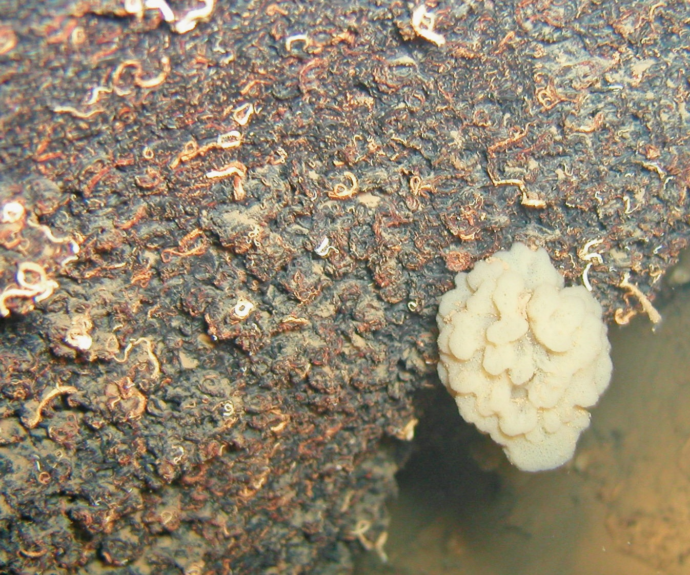
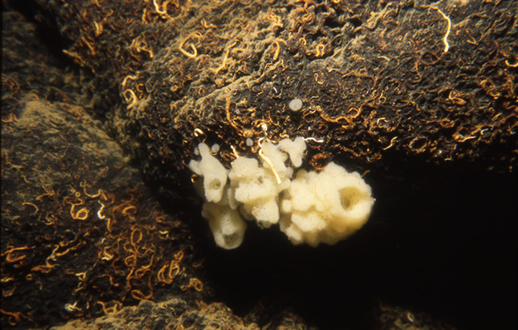
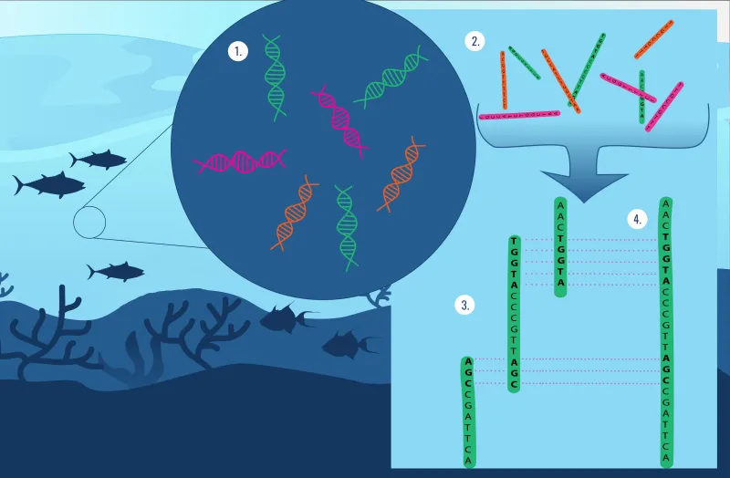

Exploring the metagenome of
Eunapius subterraneus
A comprehensive bioinformatics analysis of the microbial communities and functional pathways associated with the rare freshwater cave sponge, Eunapius subterraneus.


